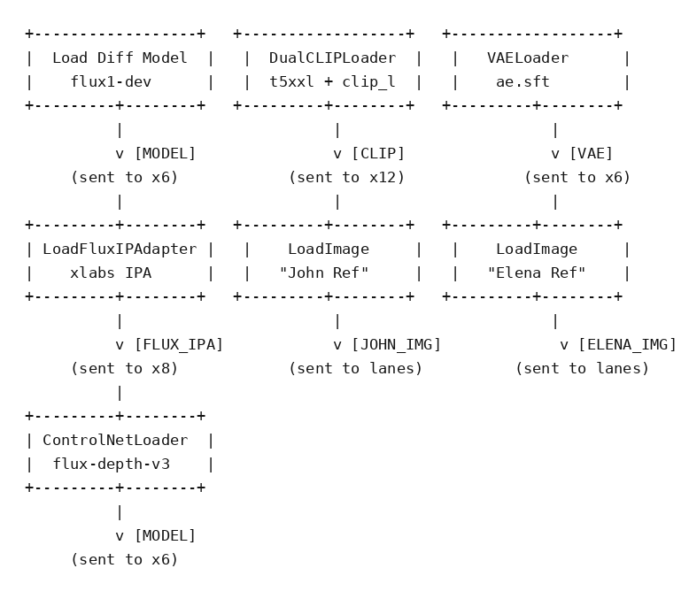
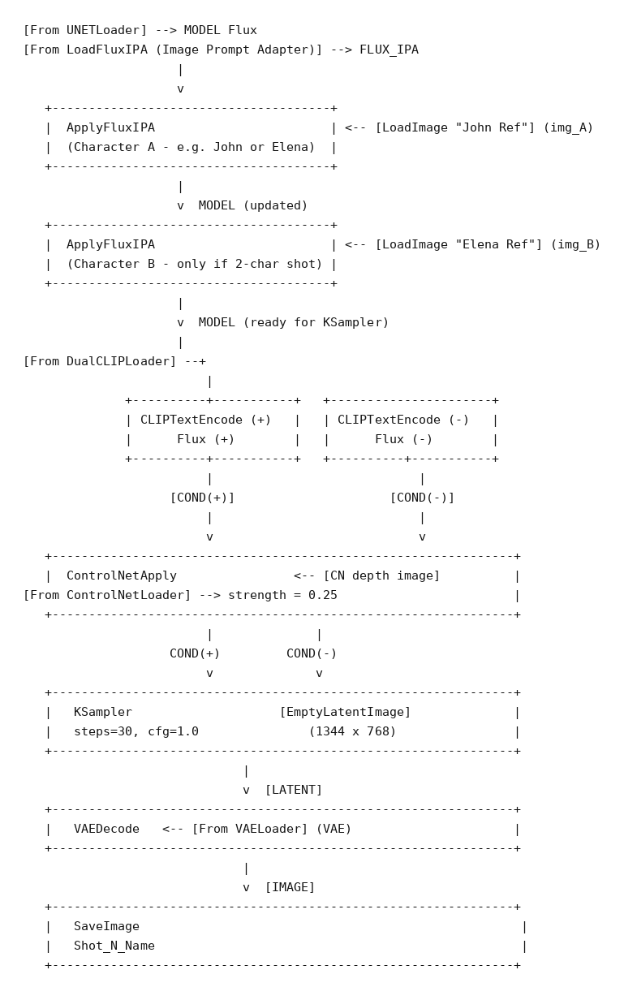

ComfyUI · Grafo dei Nodi · TECNICO AVANZATO
ComfyUI Storie Visive — Il Grafo dei Nodi
Materiale didattico di un breve corso su ComfyUI per filmmaker e graphic designer: il grafo di nodi, spiegato nodo per nodo attraverso due schemi, della pipeline usata per generare la sequenza di John ed Elena presentata in Concetti. Il grafo completo è scaricabile in formato JSON. Questo post segue il percorso via GUI, nodo per nodo; gli script Python e bash che automatizzano e scalano lo stesso tipo di generazione a molte inquadrature sono nel post gemello ComfyUI Storie Visive — Gli Script Python.
Compito di questo post è spiegare i due schemi che riassumono il grafo, vedi immagini sottostanti. I nodi esposti vengono definiti e spiegati di seguito. Per quanto riguarda le idee sottese a questi schemi vedi Concetti.

-
01
I moduli (prima figura)
Ecco come agisce ciascuno dei sette moduli mostrati nello schema in alto:
- Flux-dev (Load Diffusion Model) è la rete neurale principale, quella che genera le immagini (un tipo di Diffusion Model, spiegato in Concetti). Qui è caricata nella versione a 8 bit (fp8): con questa riduzione dei bit usati per le rappresentazioni numeriche, può girare da sola su circa 12 GB di VRAM su una scheda RTX 3090. La sua uscita (MODEL) viene inviata ai sei shot.
- DualCLIPLoader carica la rete CLIP. Con Flux, in realtà, ne carica due: CLIP (clip_l) e t5xxl. Hanno circa lo stesso scopo — l'associazione testo-immagine — ma la seconda riesce a supportare prompt fino a 512 token, mentre CLIP è limitato a circa 70. La sua uscita (CLIP) viene inviata ai dodici nodi di codifica del testo.
- VAELoader carica il VAE (Variational Auto Encoder): la rete che converte dallo spazio grafico dei pixel a quello geometrico dei vettori numerici, necessario per poter eseguire tutti i calcoli. In questa pipeline viene usato solo nella sua funzione di decoder: alla fine di ogni catena, un nodo VAE Decode genera l'immagine finale in chiaro (quindi un decoder per ogni immagine, sei in totale).
- LoadFluxIPAdapter carica l'IP-Adapter (Image Prompt Adapter; qui la versione XLabs per Flux, abbinata a un image encoder CLIP ViT-L/14). In pratica carica la rete responsabile di mantenere la coerenza tra le immagini nei diversi shot, iniettando le feature visive (ossia le caratteristiche dell'immagine di input) nella rete principale Flux. La sua uscita (FLUX_IPA) viene inviata a otto nodi di applicazione: uno per shot, più due per gli shot in cui compaiono entrambi i personaggi. Nota: a livello di pipeline del corso, questo è forse l'elemento più debole, dato che perde un po' di coerenza. Nella sessione finale della seconda settimana vi mostro come migliorarlo.
- ControlNetLoader carica la rete ControlNet (qui una versione depth per Flux), che aggiunge il condizionamento spaziale e strutturale alle immagini dei protagonisti. È una rete 'gemella', addestrata a leggere un'immagine-guida — come la depth map dei corpi dei personaggi e della scena — e a far rispettare quella geometria all'immagine generata, quali che siano le pose definite nei prompt. ControlNet è indipendente dall'IP-Adapter. La sua uscita viene inviata a sei nodi di applicazione, uno per shot.
- I due nodi LoadImage sono semplicemente dei caricatori delle immagini in input (i riferimenti dei due personaggi, John ed Elena).
-
02
Spiegazione del flusso
Una volta caricato Flux-dev, al modello Flux vengono applicati tre tipi di input.
L'IP-Adapter (IPA) e ControlNet modificano alcuni stati interni della rete Flux. Seguendo le linee di connessione: il modello Flux viene inviato a sei catene di nodi IPA, una per ogni shot finale. Nei quattro shot con un solo personaggio la catena ha un solo nodo ApplyFluxIPA — ad esempio
Shot_1_Cafe_Wide_A, che apre sul solo John al bar, oShot_6_Garage_Closeup_A, il suo primo piano drammatico nel garage. Nei due shot in cui i personaggi condividono la scena —Shot_2_Cafe_Medium_OTS_A, l'inquadratura dall'alto della spalla al bar, eShot_5_Garage_TwoShot_A, il confronto nel garage — la catena ha due nodi ApplyFluxIPA in sequenza, uno per personaggio: otto applicazioni in tutto, ed ecco perché nel primo schema l'uscita FLUX_IPA è inviata a otto nodi. L'uscita di ogni catena entra in uno dei sei moduli KSampler, responsabili del processo di Noising/Denoising descritto in Concetti. Per ControlNet, più semplice: sei linee escono dal loader ed entrano nei sei nodi che lo applicano, uno per shot — nessuna distinzione tra shot singoli e doppi, perché la mappa di profondità riguarda la scena, non i personaggi.Il terzo input agisce sul testo: dodici nodi CLIPTextEncodeFlux (uno positivo e uno negativo per shot) attivano i prompt che descrivono le sei immagini di output. Ogni nodo ha due campi: clip_l, che contiene solo l'etichetta di identità del personaggio, e t5xxl, con la descrizione estesa dell'inquadratura (o, nel nodo negativo, gli elementi da escludere). Per
Shot_3_Cafe_Closeup_A, ad esempio, clip_l si limita a “Elena, sleek female tech informant mid 30s…”, mentre t5xxl descrive l'inquadratura per esteso: “Single face, one person. Intense cinematic macro close-up shot…”. È questo secondo campo a guidare davvero la composizione; il primo serve solo ad ancorare l'identità del volto.Ripetiamo gli input e a cosa servono:
- Identità dell'immagine: l'IP-Adapter inietta nel modello Flux le feature visive delle immagini di riferimento dei personaggi, una volta per ogni personaggio presente nello shot.
- Struttura spaziale: ControlNet applica la depth map di guida al conditioning che arriva al sampler.
- Testo: il conditioning positivo e negativo, codificato dai nodi CLIPTextEncodeFlux.
- VAE: in questa pipeline non c'è un nodo VAE Encode, perché la generazione parte da una tela latente vuota (EmptyLatentImage); il VAE interviene solo alla fine, per decodificare.
A questo punto arriviamo ai passaggi finali: ControlNet applica la guida spaziale, KSampler esegue il Noising/Denoising. Infine il VAE decoder riporta l'immagine in chiaro, salvata con un nome che riprende lo shot — ad esempio
Shot_5_Garage_TwoShot_A.png.

-
03
I moduli principali (seconda figura)
Ecco cosa fa ciascuno dei moduli principali mostrati nello schema di flusso qui sopra — i moduli non già trattati tra i loader:
- ApplyFluxIPA applica l'IP-Adapter allo stato corrente del MODEL, iniettando l'identità visiva di un personaggio (dalla sua immagine di riferimento) nella rete. Viene applicato una volta per personaggio: quando entrambi condividono la scena, due nodi si susseguono, e il secondo sovrascrive parzialmente il primo — un limite noto, mitigato dando un peso maggiore al personaggio focale (i pesi nella pipeline vanno da 0,60 a 0,68).
- CLIPTextEncodeFlux (+) è il ramo di conditioning positivo: codifica il prompt della scena — i tag di identità dei personaggi nel campo clip_l più la descrizione dettagliata dello shot nel campo t5xxl — nello spazio numerico che guiderà la generazione dell'immagine. Porta con sé anche il valore di guidance di Flux (qui 3,5).
- CLIPTextEncodeFlux (−) è il ramo di conditioning negativo: codifica cosa escludere (risultati sfocati, anatomia deformata, personaggi in eccesso, ecc.). Al tipico cfg=1.0 di Flux il sampler di fatto lo ignora, ma è collegato correttamente per quando il valore di cfg viene alzato.
- ControlNetApplyAdvanced applica la depth map generata dal setup di camera/mesh 3D, con una determinata intensità (qui 0,25, per l'intero processo di campionamento), fornendo al modello un condizionamento spaziale e di posa.
- KSampler è il motore di campionamento vero e proprio: esegue il ciclo iterativo di Noising/Denoising descritto in Concetti, trasformando il rumore casuale nell'immagine latente finale, guidato dal conditioning positivo/negativo e da ControlNet. Qui: 30 passi, sampler euler con scheduler simple, cfg 1,0.
- EmptyLatentImage alloca la tela latente vuota alla risoluzione target (1344×768) che KSampler riempirà progressivamente.
- VAEDecode converte il tensore latente finale in un'immagine nello spazio dei pixel, usando il VAE caricato una sola volta all'inizio della pipeline.
-
SaveImage scrive l'immagine risultante su disco con un nome file specifico per ogni shot (ad es.
Shot_N_Name).
-
04
Impostazioni in sintesi e download
Le impostazioni principali della pipeline scaricabile, in sintesi:
- Modelli: Flux-dev (fp8), text encoder clip_l + t5xxl (fp8), VAE ae.sft.
- IP-Adapter: versione XLabs per Flux con image encoder CLIP ViT-L/14; peso 0,60–0,68 per applicazione; 8 applicazioni (6 shot, più 2 per gli shot con due personaggi).
- ControlNet: flux-depth-controlnet-v3; intensità 0,25, attivo dallo 0 al 100% dei passi; 6 applicazioni.
- Testo: 12 nodi CLIPTextEncodeFlux (positivo + negativo per ogni shot); guidance di Flux 3,5.
- Campionamento: KSampler con 30 passi, euler / simple, cfg 1,0, denoise pieno; tela 1344×768.
- Output: 6 shot, ciascuno salvato come immagine a sé.
Prima di eseguire la pipeline, assicurati che tutti i pack di nodi personalizzati e i file modello richiesti siano installati. La pagina delle istruzioni collegata di seguito elenca ogni pacchetto, ogni peso del modello e i file che devi fornire personalmente.
↓ Scarica la pipeline (JSON) → Istruzioni per i moduli personalizzati